成员自我介绍
会长
王颖捷
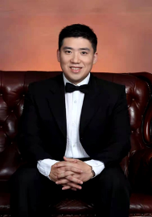王颖捷，纽卡斯尔大学硕士/博士，毕业后在伯明翰大学和牛津大学做博士后研究。我目前的研究兴趣是了解遗传性心肌疾病的炎症反应，包括肥厚性和扩张型心肌病（即HCM和DCM）。自2013年来，和志同道合的朋友们一起创办了牛津华人生命科学协会，致力于为在牛津生命科学领域学习工作的学生学者创业者们提供一个交流合作的平台。
副会长
杜越
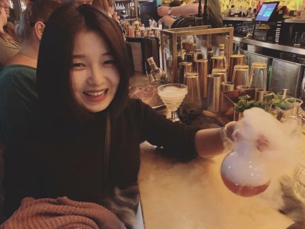杜越，牛津大学临床医学系WTP博士后，美国&欧洲基因与细胞基因治疗协会成员， ASGCT卓越研究奖得主。研究领域从兽医到体细胞克隆，从基因编辑到肺部疾病的基因疗法开发与临床转化；曾带领团队开发针对免疫力低下人群的首个抗新冠病毒感染的免疫预防。早C晚A，喜看闲书唱闲歌，且及时当勉励。现任OCLSS副会长，在协会中主要服务支持创业与外联板块发展，力求做好传递者与桥梁，把更多的知识与信息通过OCLSS的窗口与大家分享，很高兴你能来。
副会长/学生主席
李奇点
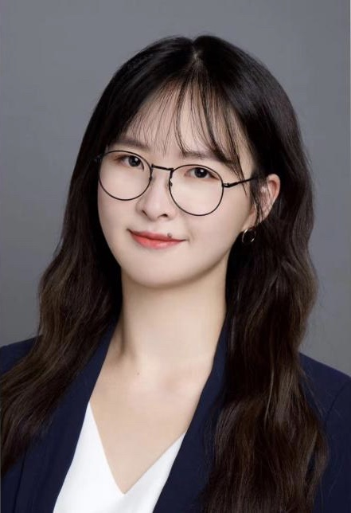大家好，我叫李奇点，目前是牛津大学化学系博四，主要研究镧系元素在生物成像方面的应用。旅英7年，在伯明翰大学完成本科，在帝国理工完成硕士学业。去年在华大基因和广发期货做过实习。学习和工作之余，参加过一些创投大赛。平时喜欢看书、学日语，最近还迷上了用RAP学英文。
组织部
部长
刘赓

刘赓，现任学会组织部部长。 牛津大学Oncology的博后，在ORCRB（俗称绿楼）工作。主要研究方向是转录因子E2F-Rb信号通路调控RNA编辑剪切从而影响肿瘤免疫。业余爱好：下厨（黑暗料理），追剧（英剧美剧），运动（徒步旅行）。希望大家多多支持和参与学会的各项活动，也欢迎大家对活动的形式和内容提出各类建议和意见！
成员
邓司伟
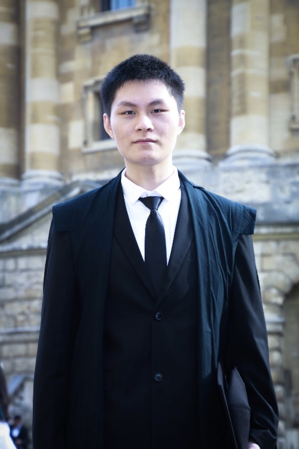邓司伟，DPhil Molecular and Cellular Medicine 一年级，来自Wolfson College，部门位于NDORMS Botnar Research Centre，研究胰腺癌干细胞表观遗传机制，主要承担各种生物信息学分析。爱吃爱睡，还爱好制作黑暗料理。
陈宇扬
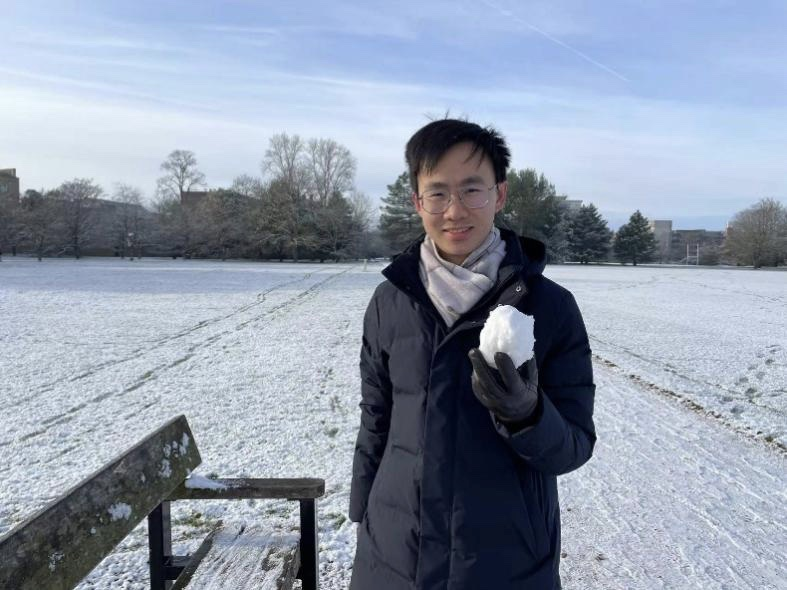陈宇扬，牛津大学生物学专业读大四，来自New College主要研究哺乳动物基因组中的残留逆转录病毒片段在免疫系统中的作用。工作之外，爱好古典音乐、旅行、阅读、运动。希望能够在组织学会的活动中，认识更多志同道合的朋友。
朱烨玄
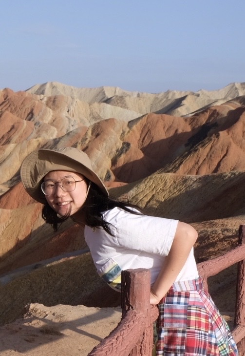朱烨玄，在牛津大学 Biomedical Sciences 读大二，来自St Anne’s College。目前正在积极地探索自己的学术兴趣。课余时间爱好看杂书和读古诗。希望能向协会中的前辈们多多学习，也希望大家能多多关注生物科技这个领域。
秘书处
秘书长
孙天依
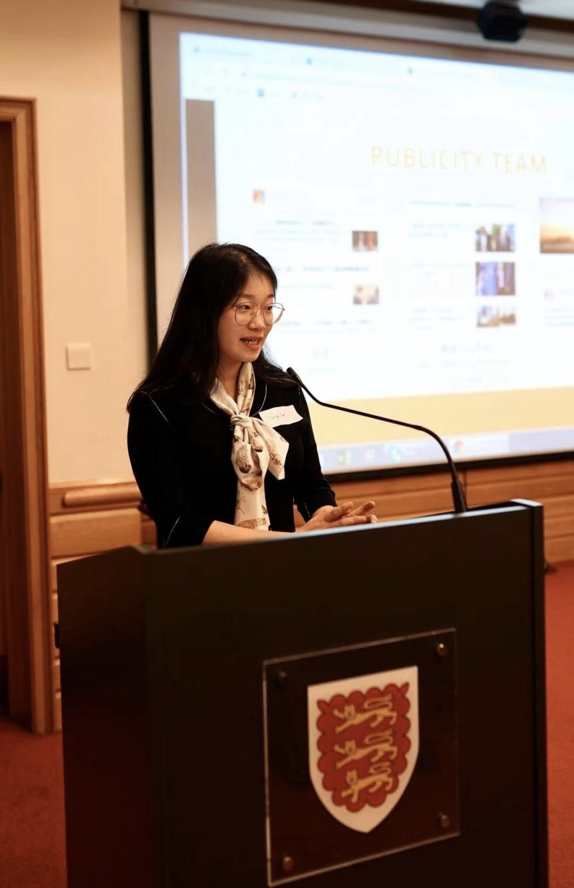孙天依，牛津大学药理学系博后，研究方向为PdCM（Pnmt+心肌细胞亚群）的特性结构和生理病理功能。我乐观积极，喜欢与人交流，每当和不同学科不同背景的人交流，与不同的人进行思维碰撞，总能让我多一分对世界的认知与喜爱。除此之外，我还喜欢旅行和体验生活，积极参与各个活动。很荣幸可以加入OCLSS，现任秘书长，希望可以通过组织不同类型的研讨会、创业论坛、分享会和讲座，让更多人了解这个组织，从中收获很多。
成员
郭伊妮

大家好！我是正在学习背贯口的郭伊妮，在和Trinity一墙之隔的Balliol College读工程。日常追番打游戏，人越菜瘾越大。热爱选秀和Kpop。虽然爱看喜欢的乐队的live，但同时也是深度民乐爱好者，（作为一个只会中阮的菜鸡）深爱着琵琶和杨琴，晚上最喜欢做的事情就是看星星，认星座。很开心能够认识大家，成为协会秘书处的一员！希望接下来的日子可以学到更多的知识，和大家一起共创辉煌！！
马子奇

马子奇 (Jackie Ma, M.D., M.Sc)，牛津心血管医学部访问学生。在中山一院完成住院医师阶段，荣获6封患者感谢信，期间兼任团总支副书记。曾参与多个国家级课题，广泛涉及基础、临床研究（心血管、代谢、呼吸）。
宋怡璇
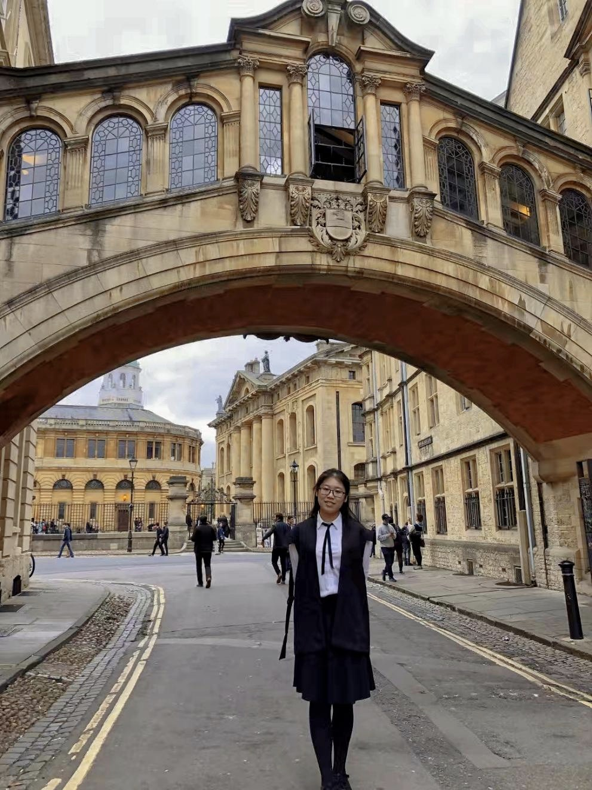宋怡璇, Biochemistry 4th year from St Peter’s College, 目前在Pharmacology department Platt Lab 研究Mechanistic similarity between lysosomal storage disease and mycobacteria infection。业余热爱旅行和摄影
创业部
部长/财政长
张叶川
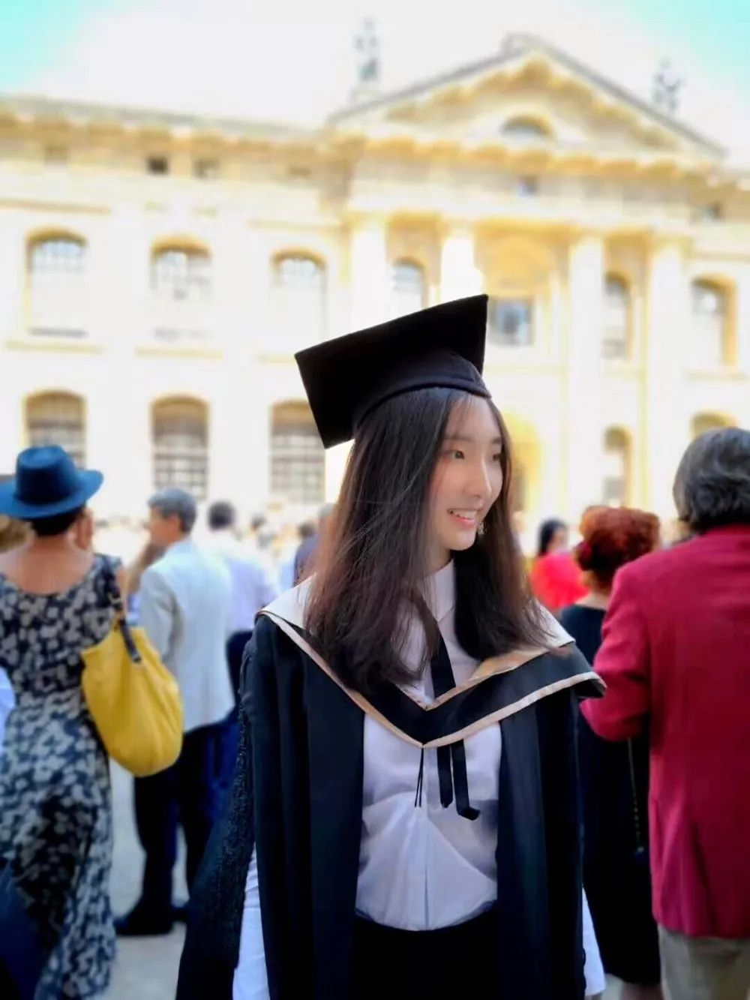牛津生物学工程系博士三年级，研究方向ASL核磁脑部血流量值计算问题。对生物医药方向的创业公司和相关投资很感兴趣
成员
石柳
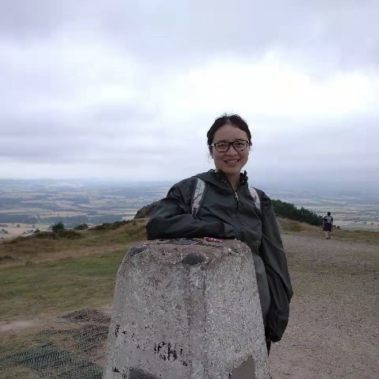石柳，牛津大学精神科系博士后，iCURE创业项目奖得主。研究方向专注于开发血液检测用于阿尔茨海默症的早期诊断。爱好看书，电影及徒步。现加入创业部，在协会中主要支持创业板块发展，尤其是如何将科研成果进行产业转化，将更多的资源通过OCLSS的平台与大家分享。
李思琪

李思琪，医学院肿瘤系博士二年级，不会说方言的安徽合肥人。研究方向是核酸药物在肿瘤中的传递与治疗。对研究成果的转化与早期投资创业依然在学习探索中，希望和OCLSS同时有专业素质和综合能力的小伙伴们一起学习成长。
钱颀楠
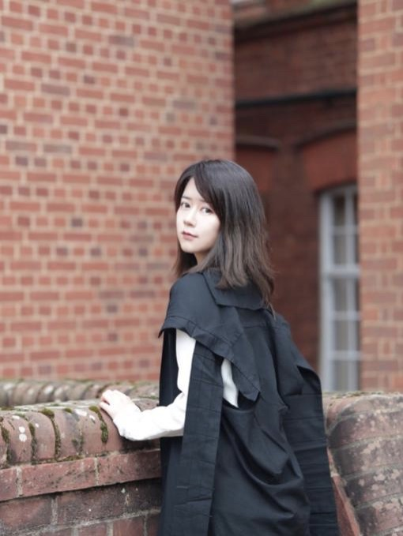钱颀楠, 牛津大学生物细胞部门博士生,研究方向为肉瘤细胞疗法研发。 平时喜欢健身打球,旅游电影。通过加入OCLSS创业部, 我希望为创业板块的发展作出自己的贡献,不断通过OCLSS的平台为大家提供更好的创业环境。
朱亦巅
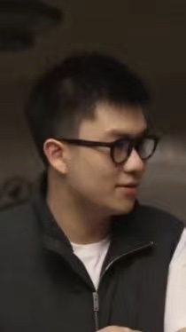朱亦巅正在就读博士二年级并进行疫苗相关的课题研究，感兴趣接触学习医药方面的项目。爱好有搭建hifi系统等。
外联部
部长
张盛盼
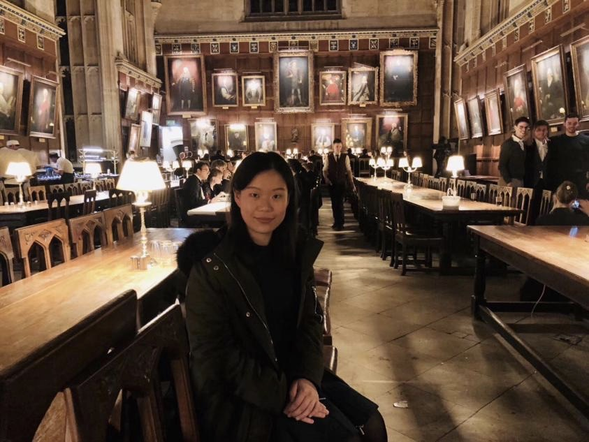我是张盛盼，就读于牛津大学病理系，生物医学二年级博士一枚，研究方向是HIV-1在细胞间传播的分子机制及其对免疫缺陷和炎症等系列并发症治疗的应用。工作上与实验佛系爱恨纠缠，生活中对一切新鲜事物充满好奇，喜欢旅行冒险尝试一些刺激运动。很开心能通过OCLSS这个平台与大家合作交流。
成员
皮力

皮力，2020 级 Nuffield Department of Medicine 流行病学方向博士生，St Hugh‘s College。帝国理工/华西校友。研究方向是传染病建模，但最近沉迷塞尔达。期待新一年和大家的合作！
王小凡
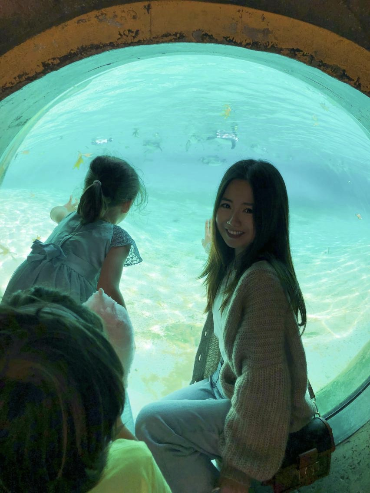Hello, 我是爱旅行爱音乐爱化学的Emily 王小凡。就读过G5里面的三个学校UCL, IC & OX现在是牛津大学Dphil inorganic Chemistry 二年级在读。研究课题是EPSRC合作项目：镧系金属核磁造影剂在低氧肿瘤成像和治疗上的应用。非常高兴加入OCLSS外联部，希望大家多多参与OSLSS今年的活动！
陈曦
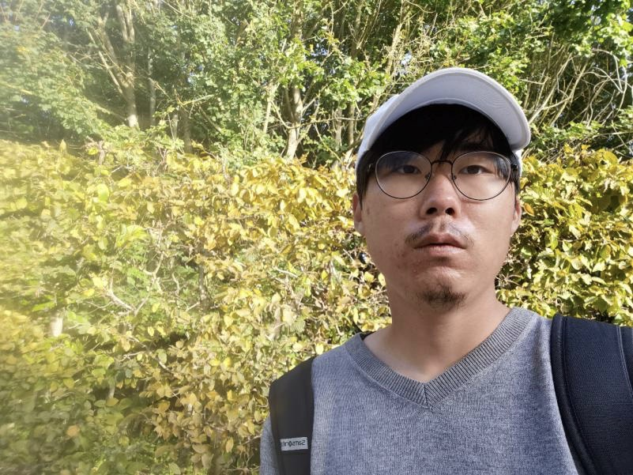你好😊，我是陈曦，航院17级流体力学硕士。目前在牛津生物医学工程专业读博士二年级，st hildas college
新媒体部
朱敏茵 (Sandy)
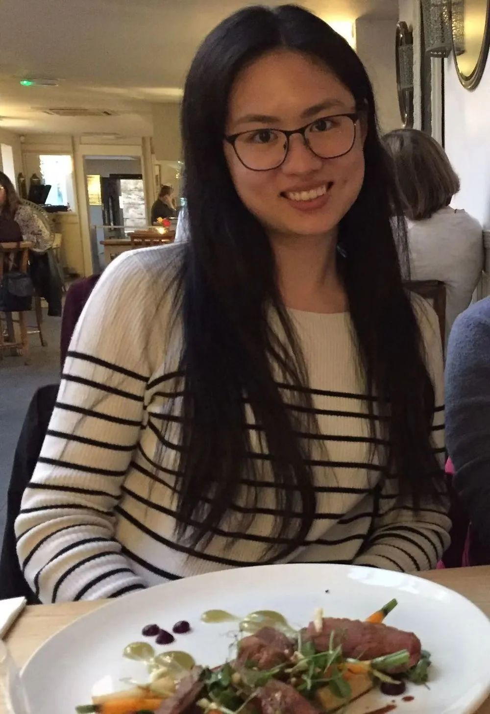朱敏茵(Sandy), 新媒体部部长。我于2013年在伦敦大学学院（UCL）获得了生理和药理学位。之后，在伦敦玛丽女王大学完成了硕博连读。目前博后第三年，研究方向主要是心脏医学。爱好美食和郊游。
郑健青
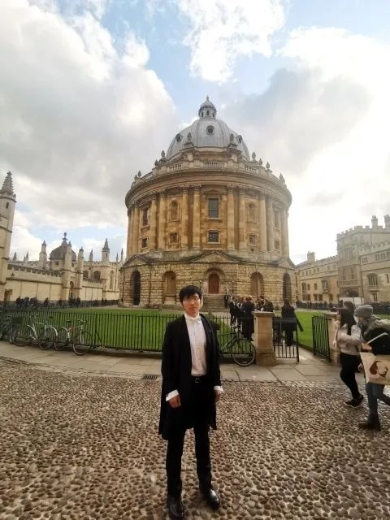获肯尼迪奖学金资助于牛津大学DPhil第三年在读，此前获海伦哈姆林奖学金资助MRes毕业于帝国理工。研究领域包括人工智能于生物医学分析、术前诊疗及手术导航的应用。于国际会议及SCI期刊发表相关研究成果十余篇。在科研转化方面有多项专利。爱好唱K，健身，电影。
赵玉
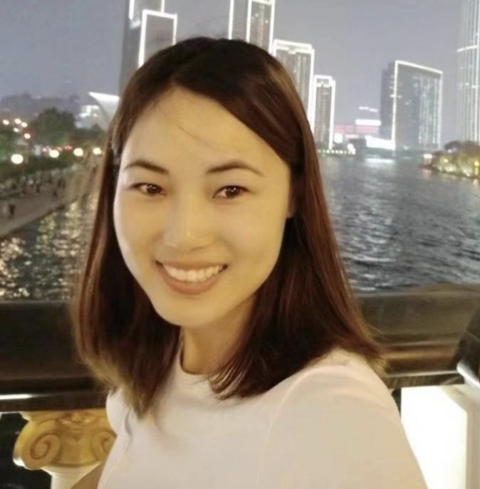我是新媒体部的赵玉。专业是生物医学，研究方向为肿瘤的放化疗，以及免疫治疗。曾经参与过非小细胞肺癌的放疗增敏研究，目前的主要研究方向为恶性胸水的个体化免疫治疗。
吴姿诺
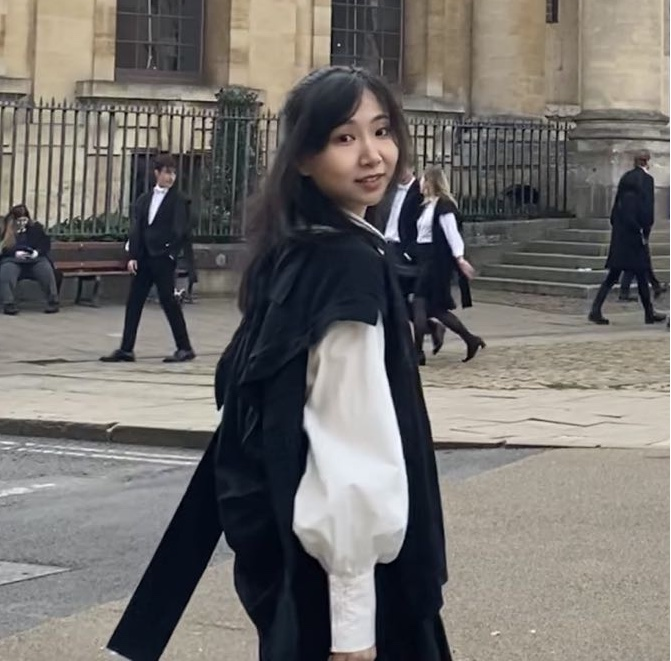吴姿诺，新媒体部成员。目前为牛津大学Biochemistry本科大一学生。爱好不多，练舞十余载，平日也好抱着只小吉他哼哼曲儿。主要负责公众号推文的设计和排版，如果有任何建议与意见请尽管联系哦～
过往成员介绍
梁竹
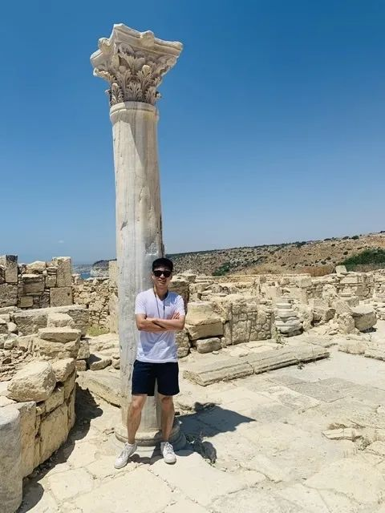Dphil in Clinical Medicine，exeter college，专注炎症小体在神经退行性疾病中的研究。（他很神秘不愿意透露过多信息，想多了解可以关注我们公众号）。
陈欣雨
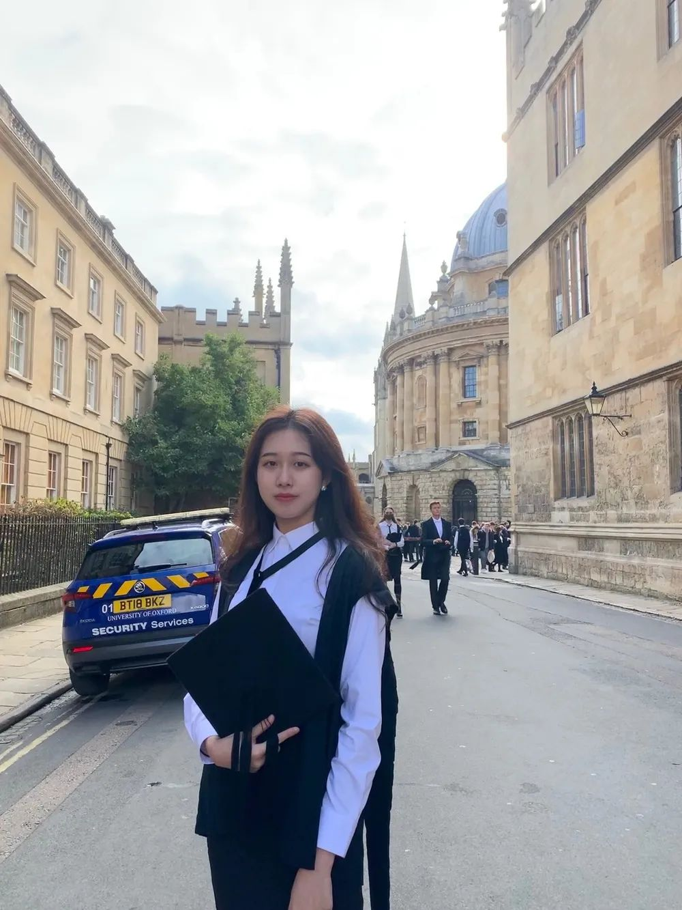hello 大家好，我是陈欣雨，担任宣传的职位，主要负责管理公众号和发送推文的工作。日常是刷剧刷电影发呆散步看杂书打羽毛球，最近也开始发展一些户外运动了。喜欢的电影很杂，一个人安静的时候最喜欢看战争片或者纪录片，或者听着歌四处走走。想学会调酒做饭尤克里里，想去冰岛稻城阿那亚，疫情结束后一定要去伦敦看音乐剧。我喜欢尝试不同领域的新事物，如果有什么想分享的可以来找我，我特别乐意去了解。
杜越
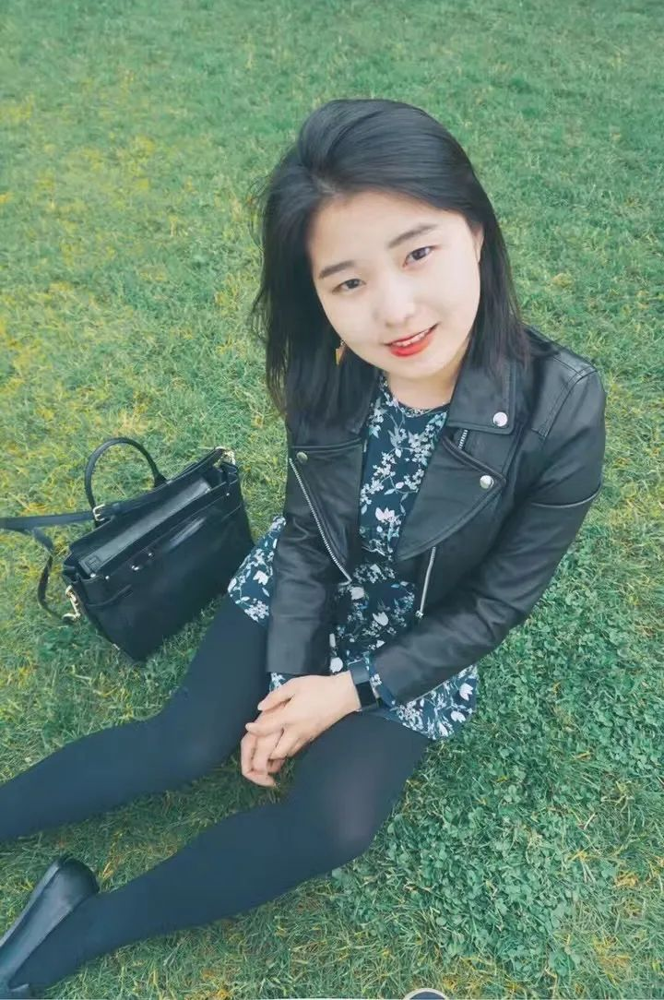杜越，爱丁堡大学博士，牛津大学博士后，美国基因治疗和细胞治疗协会（ASGCT）成员，英国囊性纤维肿基因治疗组织（GTC）成员，主要科研方向是基因编辑和治疗现任职于英国牛津大学医学院。主导了多项科研项目，研究成果多次在国际会议展示，SCI学术发表在【 Molecular Therapy 】【 Journal of Pineal Research 】等核心期刊。在科研成果转化方面，带领团队获得华为杯英国帝国理工大学创新大赛最佳路演奖、中国教育部“春晖杯”创业创新大赛优胜奖、南京六合创业创新大赛二等奖等。
陈劲廷
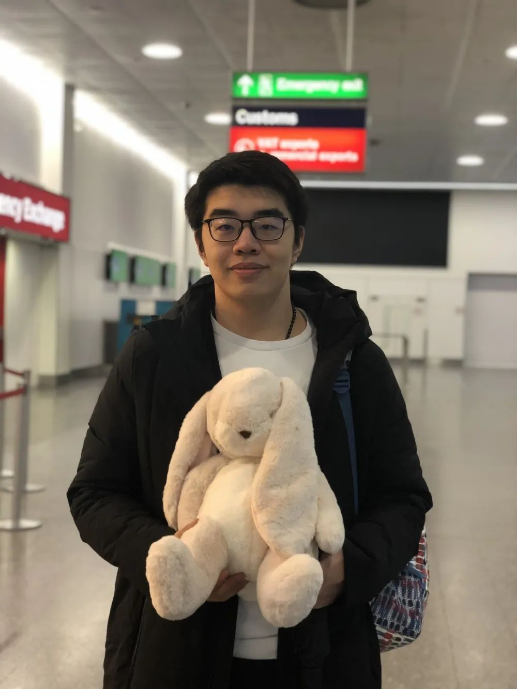大家好呀，我叫陈劲廷，化学学生。平时有空也会研究下做饭和摄影，希望能和学长学姐多学习交流。
秦岭
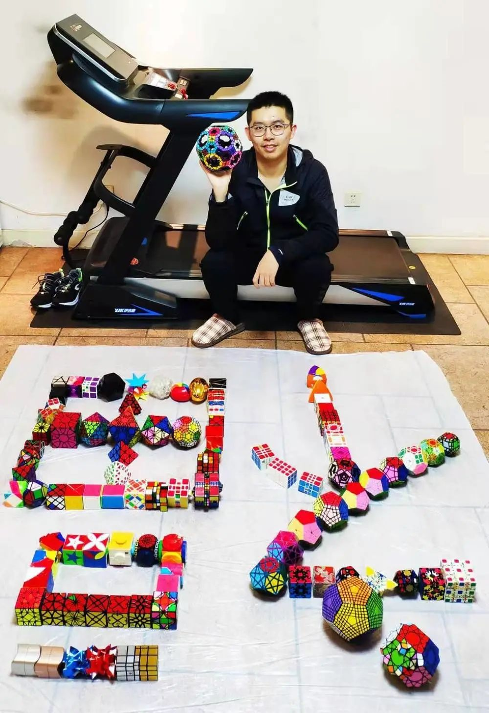大家好，我叫秦岭 (但我不负责中国南北气候差异，后院也没有野生大熊猫)。Christ Church 学院，牛津 Clinical Medicine 博士第二年在读，研究方向为病毒入侵宿主分子机制。业余爱好一切棋类和球类运动 (篮球除外)，偶尔玩玩魔方。